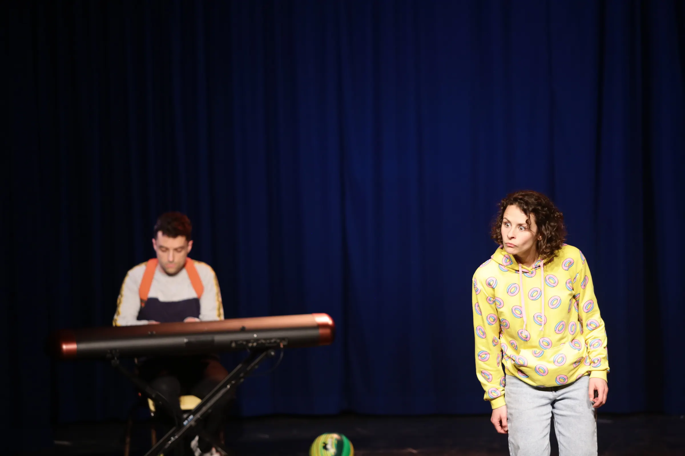
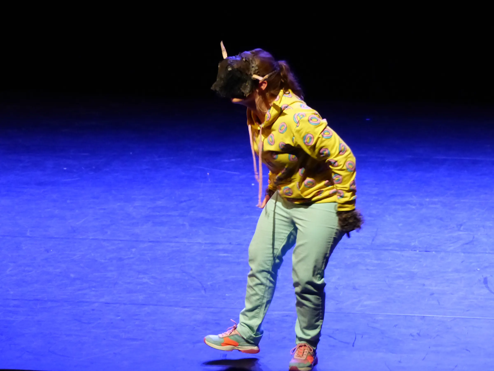
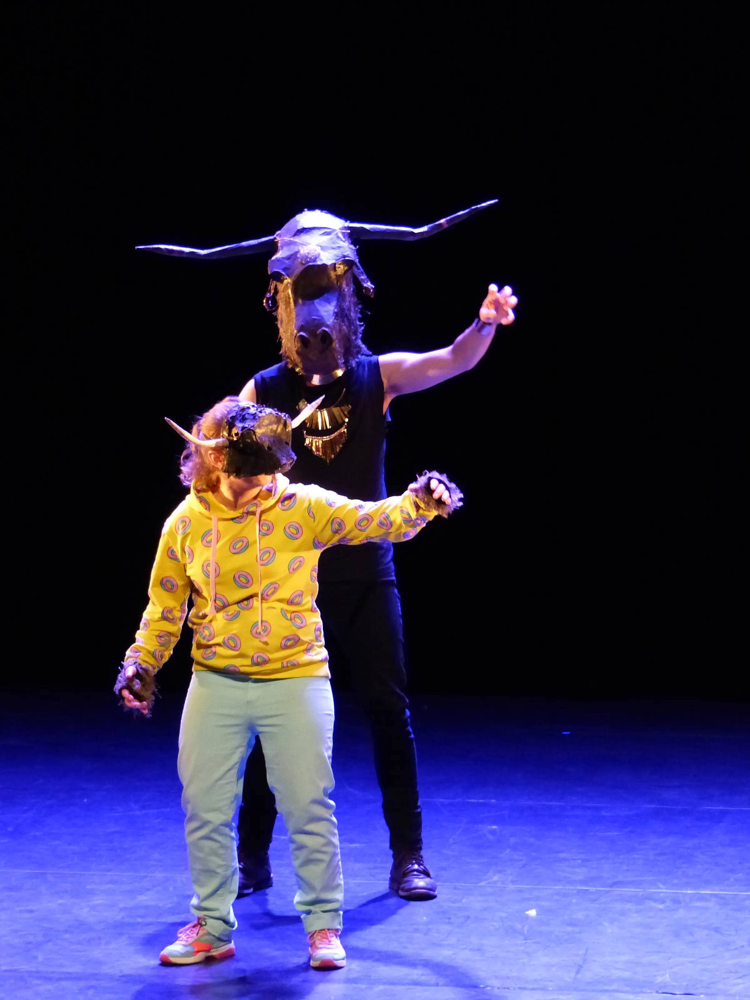
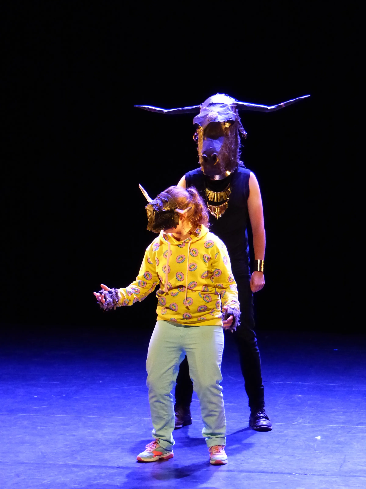
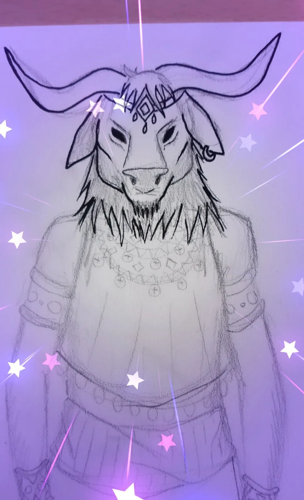
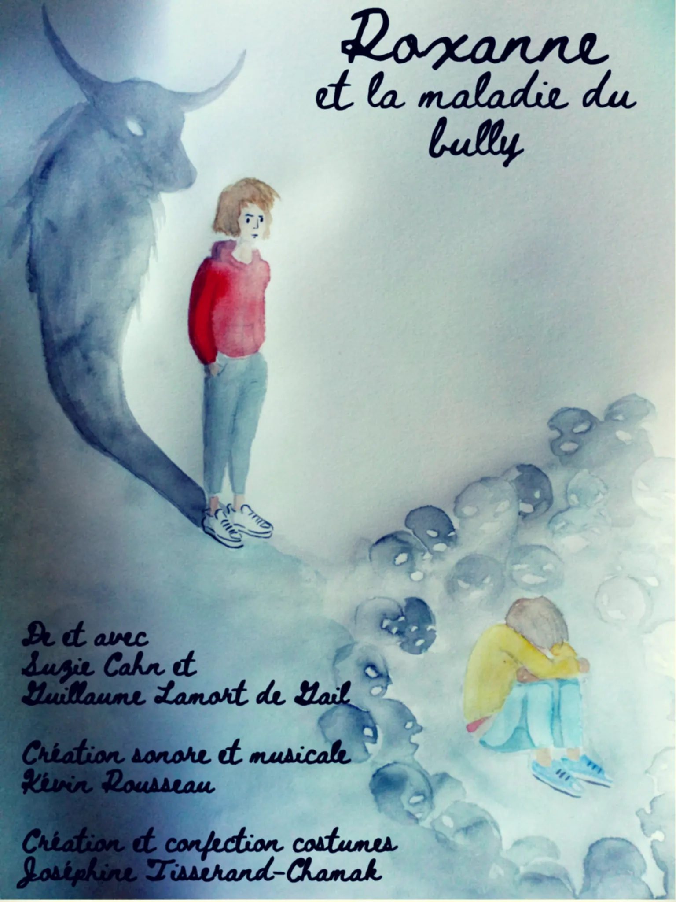
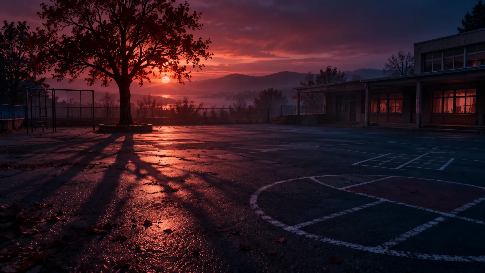

Accueil/Spectacles/Roxanne et la maladie du bully
Roxanne et la maladie du bully
- Création
- 2022
- Âge
- Dès 8 ans
- Durée
- 1 h
- Au plateau
- 2 artistes
- Prochaine date
- à programmer
L'histoire
L'histoire
C'est la rentrée scolaire et Roxanne est heureuse de commencer l'année, entourée de son groupe d'amis. Dans la cour de récréation, chacun se retrouve et compare ses histoires de vacances. Dans cette effervescence, on se moque aussi du comportement de Nicolas, qui finit seul au moment où la sonnerie retentit. Plus tard dans la journée, Roxanne éprouve des sensations étranges, elle éternue, se gratte. Elle réalise avec effroi qu'elle est en train de se métamorphoser en taureau. Elle cherche alors un moyen de mettre un terme à la terrible « maladie du bully ».
Aborder le harcèlement scolaire sans être explicatif ou moralisateur, c'est le pari que nous faisons avec notre pièce ! L'écriture, inspirée des mots des CM2, nous permet de rendre la pièce authentique, réelle, véritable miroir de la vie d'élèves de 2022. Lors du processus de création de la pièce, nous avons partagé le rôle d'auteur et d'interprète avec les 50 enfants des classes de CM2 de l'école Suzanne Lacore à Saint-Jacques-de-la-Lande (35). Pendant plusieurs jours, les élèves ont mené un travail d'expression orale, écrite et corporelle autour d'un thème en lien avec l'histoire de Roxanne. À partir de ce travail, plusieurs répliques ont été écrites, enregistrées par les enfants et intégrées au spectacle.
La pièce embarque son public dans un univers musical et fantastique. Des événements inhabituels viennent vite perturber le déroulé de la journée de rentrée en CM2. Le travail de direction d'acteur utilisant les outils du clown donne à Roxanne une partition de jeu physique et sincère. Les costumes permettent une transformation en taureau à vue. La création sonore et la musique live nous plongent dans l'ambiance d'une cour de récréation tantôt réaliste, tantôt cauchemardesque… jusqu'à ce que Roxanne trouve la solution contre la maladie du bully !
Chaque représentation est accompagnée d'un temps d'échange et d'une série d'ateliers sur le harcèlement scolaire.

En images
Galerie





Image d'ambiance
Le jour de la rentrée, Roxanne se transforme en taureau. Une pièce sur le harcèlement scolaire, écrite avec des CM2.
Distribution
L'équipe
du spectacle
- Texte
- Guillaume Lamort de Gail
- Mise en scène
- Guillaume Lamort de Gail, assisté de Suzie Cahn
- Costumes
- Joséphine Tisserand-Chamak
- Création sonore
- Kevin Rousseau
- Avec
- Anne Billiet et Kevin Rousseau
- Soutiens
- Théâtre L'Aire Libre, Mairie de Saint-Jacques-de-la-Lande, Anis Gras – le lieu de l'Autre, Mairie de Saint-Grégoire
Pour les programmateurs
Fiche
express
Agenda
Les dates
Dates à venir et représentations passées, depuis la création en 2022.
À venir
Aucune date annoncée pour le moment. Ce spectacle est disponible pour vos programmations.
Programmer ce spectacleReprésentations passées (6)
Dans la presse